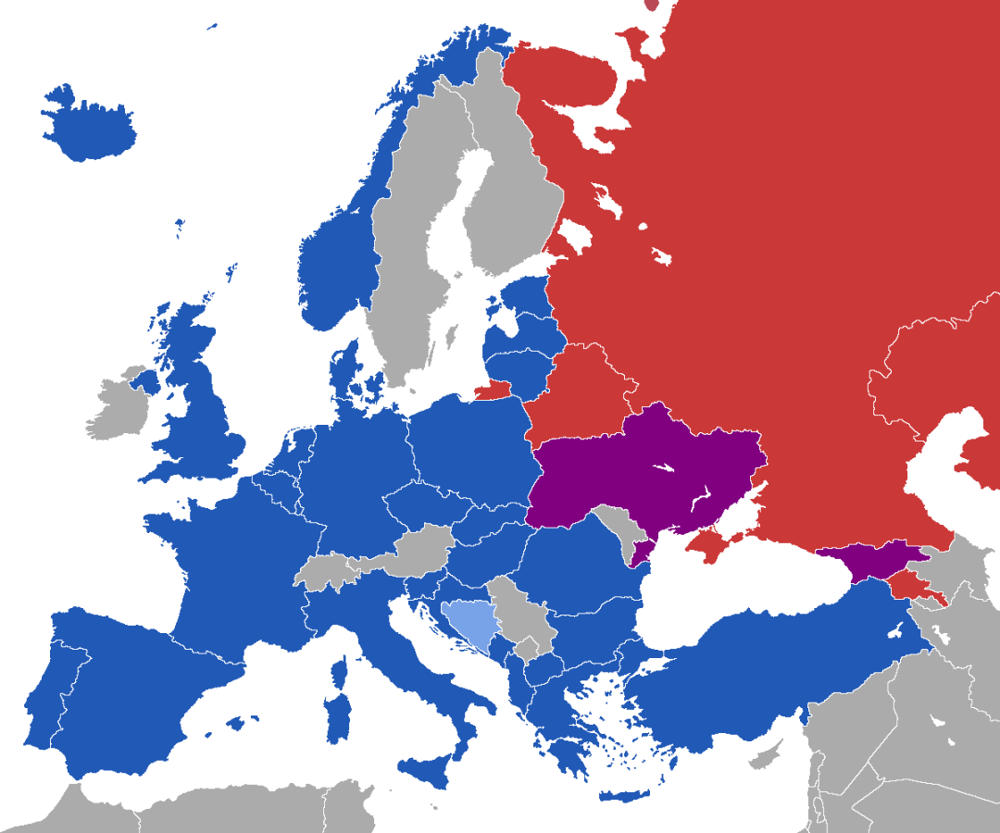

收录于合集

编者按
俄罗斯总统普京2022年2月24日清晨发表电视讲话说，决定在顿巴斯地区发起特别军事行动。随后，俄军从多个方向对乌克兰发动攻击。乌克兰总统泽连斯基发表讲话宣布乌克兰全境进入战时状态，乌克兰国民卫队司令部被摧毁。俄乌战争正式爆发。
国政学人于2022年1月25日发布教育部长江学者、复旦大学教授唐世平针对乌克兰局势的预测： 俄罗斯将大概率出兵乌克兰，时间就在这个冬季 （点击链接可前往） 。一个月后，现实符合预测结果。
经唐世平教授授权，国政学人发布其于2009年1月8日对乌克兰危机提出的解决方案： 乌克兰应保持中立，可以加入欧盟，但不加入北约。 否则，双方将迎来一场“冷和平”甚至是战争。可惜的是，美国与欧盟的政客并没有正确解决乌克兰潜在的危机，乌克兰也并没有学会如何与俄罗斯和平相处，最终酿成悲剧。

乌克兰，一种解决方案
唐世平
张潇文（译）杨紫茵（校）
柏林墙倒塌的19年后，俄罗斯-格鲁吉亚冲突的发生，意味着一场新的20年危机正笼罩着欧洲。
显然，欧盟/北约和俄罗斯的大多数精英仍然使用传统的地缘政治逻辑思考，且被民族中心主义、恐惧、贪婪甚至敌意蒙蔽了双眼。双方自以为是地相互谴责，一次又一次地加剧了安全困境。因此，他们正陷入一种“冷和平”（貌似比冷战更具可能性），且都无法防止这种趋势的产生。实际上，双方并不想阻止：他们想要的是惩罚对方并与之战斗。一场真正的悲剧正在酝酿之中。
随着事态发展，许多人将乌克兰视为双方的下一个战场。虽然欧洲主要国家在这个问题上保持缄默，但 美国主要政客都一再宣称，乌克兰终有一天会加入北约。另一方面，俄罗斯已经明确表示，它不会接受乌克兰进入北约。
然而，乌克兰也可以为防止欧洲出现新的一场20年危机提供黄金机会。让乌克兰加入欧盟，但不加入北约（即乌克兰中立），便是解决之道。 一个由欧盟和俄罗斯共同支持的中立乌克兰最符合欧洲（不管是新欧洲还是老欧洲）以及俄罗斯的利益 。这是一个强有力的信号，表明双方拒绝加入新的冷战，且将对方视为永远的敌人。这不仅冻结了他们之间不断升级的安全困境，还保留了他们之间建立更具建设性关系的可能性。
01
欧盟-北约纽带关系的终结
如今，欧洲主要国家（法国和德国）必须承认，在冷战后的欧洲，欧盟和美国的利益经常出现分歧（甚至是根本性的）。法国和德国不能继续假装他们和美国可以一直和睦相处。
在冷战后的欧洲，欧盟的扩张最大化地切合了欧洲的核心利益，因为欧盟寻求建立一个基于国际法和规范而不仅仅基于军事力量的广泛安全共同体；而北约的扩张只是有时符合欧洲的核心利益，因为北约一直且未来也依然是一个以美国为中心的联盟，永远需要一个敌人。
冷战后，美国的主要战略目标一直是防止竞争对手的出现，1992年泄露的美国《国防规划指南》便明确提出了这一点。尽管存在意识形态上的偏差，美国政客都认真地追求这一目标。谁又能责怪他们呢——作为美国总统，他们必须坚定地相信，美国的主导地位对美国乃至世界都是有益的，并据此采取行动。
在保持主导地位的战略下，美国将一个统一的欧洲——就像中国、印度和俄罗斯一样——视为潜在的竞争对手。只有根据这种逻辑，我们才能理解为什么那么多美国政治精英如此担心欧元——因为欧元有可能剥夺美元作为全球金融体系中唯一储备货币的身份，从而削弱美国主导地位的一个支柱。
对美国来说，防止欧盟成为竞争者的最简单方法无疑是久经考验的“分而治之”黄金法则。只要欧洲仍处于分裂状态，美国就少了一个潜在的竞争对手。毫不意外，美国一直忙着在欧洲国家之间制造不和。拉姆斯菲尔德（Rumsfeld）臭名昭著地将“老欧洲”称为过去，而将“新欧洲”称为未来正反映了这一战略逻辑。通过在一些“新欧洲”国家到处安装军事基地，美国一直确保总会有一些欧洲国家更重视与美国的关系，而不是与欧盟的关系，从而毫不费力地将欧洲划分为两个阵营。更不用说，这样的战略也达到了遏制和羞辱俄罗斯的目的，从而进一步（或者永久地）分裂欧洲。

北约成员国（蓝色）、正在加入北约的国家（紫色）、俄罗斯领导的集体安全条约组织（红色）
02
乌克兰应该走向中立
欧盟，或者更准确地说，法国和德国，如果想要避免让俄罗斯成为他们永久的敌人，就必须停止美国这种处理欧洲事务的方式。法德必须明确严正声明：将由他们来负责欧洲事务，尽管会将美国的意见纳入考虑范围。 从根本上说，法德必须要求“新”“老”欧洲国家在决策时必须选择欧盟，而不是北约。
然而，截至目前，法国和德国一直不愿迫使其他欧洲国家做出选择，因为它们自己也不想做出艰难的选择。 法国和德国允许北约向俄罗斯势力范围进一步推进，却没有采取任何行动阻止这一进程，它们愿意成为美国遏制和羞辱俄罗斯的帮凶。 法国和德国一直希望俄罗斯能吞下所有的骄傲和苦果。也许这两个国家，就像俄罗斯一样，仍然在用传统的地缘政治逻辑思考他们所有关于欧盟是一个“规范性权力”的言论，从而暗中为北约逼近俄罗斯家门口而拍手喝彩。对许多法国人和德国人来说，对付俄罗斯最可靠的方法就是遏制它。由于这种“恐俄政策”（Russia- phobic policy），欧盟和俄罗斯之间的恐惧和猜忌自然而然地大幅增加。俄罗斯对格鲁吉亚的强力分裂表明，俄罗斯不会再接受这种行为了。
而中立的乌克兰阻止了这种以美国或北约为中心的遏制和羞辱俄罗斯的做法。然而，俄罗斯也并未因此不劳而获。乌克兰的中立还要求俄罗斯承诺维护乌克兰的领土完整性和中立性，以此表明其良好意图。若俄罗斯真的同意，它将有效地约束自己不去重建一个新帝国，因为在乌克兰没有被合并的情况下，新的俄罗斯帝国将无法建立。
许多人可能会指责中立乌克兰的解决方案是绥靖政策。这会是卑鄙的手段。然而普京不是希特勒，尽管他的话很强硬。希特勒是绝无仅有的，把普京描绘成希特勒是歪曲事实，这只会加剧国内的仇恨和恐惧。普京是典型的俄罗斯现实主义者，完全植根于传统地缘政治思维。他想要一个受其他国家（包括美国和欧盟在内）尊重的伟大的俄罗斯；但他并无野心使俄罗斯成为第三帝国。此外，还没有可靠的迹象表明俄罗斯希望通过武力和恐吓将其前殖民地改造成一个新帝国。尽管俄罗斯进行了艰难的谈判，犯了许多错误，但它并没有像布什和切尼（Cheney）那样做。俄罗斯没有撕毁《反导条约》，没有废除《京都议定书》，也没有入侵伊拉克。它只是希望恢复一些威望，以及对其“势力范围”的一些尊重。在欧洲国家（和美国）谴责俄罗斯关于势力范围的言论之前，它们最好扪心自问：难道它们不是一直试图通过北约的扩张将自己的势力范围扩大到俄罗斯的家门口吗？
03
学习越南的方式？
乌克兰的一些精英可能会指责中立乌克兰的解决方案是为了安抚俄罗斯，牺牲他们既加入欧盟又加入北约的希望。 在沙俄和苏联经历的种种不愉快经历使得许多前苏联国家和东欧国家对俄罗斯的恐惧和仇恨根深蒂固。乌克兰也不例外；因此，它希望完全远离俄罗斯。
不幸的是，加入北约甚至不符合乌克兰的长期利益。严酷的现实是，如果说北约想要把乌克兰拉入联盟、乌克兰的恐俄精英人士想要通过加入北约而逃离俄罗斯的地缘势力，那么乌克兰的俄罗斯人可能想要脱离乌克兰。一旦发生内战，乌克兰就可能沿着种族地理分界线分裂。 当冲突发生，北约和美国可能仍然会像对格鲁吉亚那样对乌克兰袖手旁观： 如果俄罗斯决定以干预杀死乌克兰俄罗斯族的内战为借口分裂乌克兰，任何理智的美国和欧盟领导人都不会冒险与拥有核武器的俄罗斯开战。
因此，欧盟和俄罗斯共同支持的中立乌克兰也要求乌克兰承诺与俄罗斯和平共处。任何国家都无法摆脱地理环境，乌克兰也不例外。因此， 尽管乌克兰在情感上依附于西方，但它必须学会如何与俄罗斯和平相处。如果乌克兰通过加入北约使俄罗斯成为永久的敌人，那么它便是让情绪压倒了理性。
也许乌克兰会明智地从越南与中国的经验中吸取教训。越南曾一千年来与中国作战（与法国和美国也曾短暂作战），并在1975年至1989年间与苏联结盟对抗中国，但越南仍不情愿地承认。无论其外部盟友有多强大，它都无力与中国对抗。因此，在过去20年左右的时间里，越南一直试图在中国和其他外部大国（即美国）之间达成微妙的“中间立场”，但没有宣布中立。越南领导人明白， 外交的艺术不是在地理限制范围内寻找情感上的满意，而是寻找理性上的可能。
同样地，或许格鲁吉亚也应该有这样一个选择，即加入欧盟，但不加入北约。格鲁吉亚人可能也会认识到，他们的福利与欧盟而非美国或北约的联系更紧密。中立的格鲁吉亚也将使格鲁吉亚承诺与俄罗斯和平共处，无论多么勉强。
如果欧盟不能阻止以美国为中心的北约向俄罗斯推进，俄罗斯只会变得更加恐惧和愤怒。如果俄罗斯不能对中立的乌克兰做出承诺，那么欧盟可能产生对俄罗斯的新遏制政策。中立的乌克兰考验着它们通过可信承诺来相互迁就的意愿。
04
达到平衡
当然， 由欧盟和俄罗斯支持的中立乌克兰只是朝着更加平稳的俄欧关系迈出的第一步。如果以美国为首的北约也能支持中立乌克兰，这也将表明美国对俄罗斯的善意。这将是一个理想的结果。
如果欧盟和俄罗斯不能正确对待乌克兰，受影响的将是欧洲——包括俄罗斯在内。结果很可能是一场“冷和平”，甚至是意识形态对立不那么强烈的新冷战。届时，美国、中国和印度的地缘政治家将喜闻乐见，嘲笑自称开明的欧洲人的愚蠢。经历了人类历史上两次最血腥的战争和冷战结束后的短短二十年，欧洲人现在又回到了相互仇恨、甚至可能相互残杀的游戏中。欧洲人，无论新老，都是同一批人，无法和平相处。
然而，如果欧洲和俄罗斯能够团结一致，也许欧盟可以为俄罗斯提供其人民一直渴望的最终家园。愿上帝保佑欧洲。
唐世平简介 ****
唐世平，教育部长江学者特聘教授，复旦大学教授，是当今最有国际影响的中国社会科学家之一，也是当今亚洲最优秀的社会科学家之一，“掌中星球”创始人兼CEO。唐世平教授的研究领域广泛，主要分成五个大的领域：国际政治、比较政治、制度经济学、政治（学）理论、社会科学哲学。他在这些领域都做出了世界水平的研究，并且有广泛的著述。
唐世平签名新书
<img src=’/images/222/6.jpeg’ width=‘89’ height=‘100’
/> <img src=’/images/222/8.png’ width=‘89’
height=‘89’
/>
<img src=’/images/222/8.png’ width=‘89’
height=‘89’
/> 《众人皆吾师》《观念、行动、结果：社会科学方法新论》《比较政治学》更多资讯扫码进入“掌中星球”
《众人皆吾师》《观念、行动、结果：社会科学方法新论》《比较政治学》更多资讯扫码进入“掌中星球”
排版 | 王慧瑜 臧泽华
文章观点不代表本平台观点